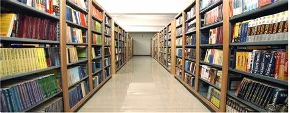
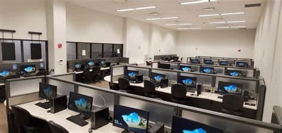
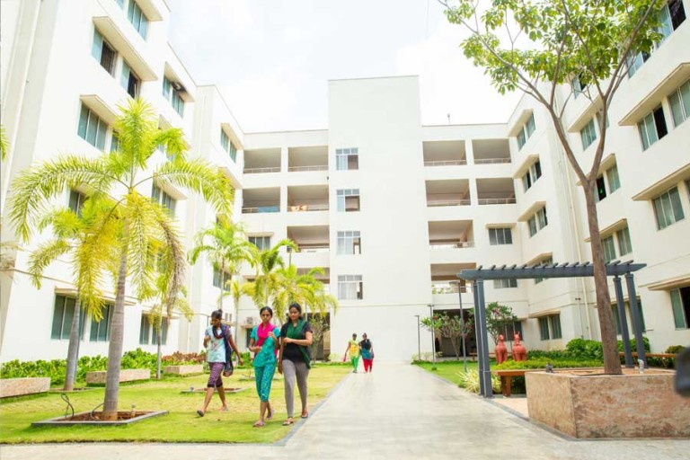

LIBRARY

The department of Library of K.S.Rangasamy College of Arts and Science is established in 1995.
Housed
in the ground floor of C Block in KSRCAS in a vast area of 6200 sq.ft. and can accommodate about 180
students at a time. The library is furnished with appropriate ventilation, lighting, and fans.
The main objective of the KSRCAS library is to provide information services and access to print and
e-resources to support the scholarly and informational needs of the institute community.
The integrated fully computerized library is well equipped with modern facilities and resources in the
form of books, print and e-journals, CD-ROMs, on-line databases and audio video cassettes etc.
Open Access System is being followed in the library.
SOFTWARE DEVELOPMENT WING

Vision
To exceed the quality standards and guarantee the development of user-friendly and safe software
that is reliable for all the applications.
Mission
Our Mission is to provide quality Web and Software Development solutions for the enhancement of
Faculty and Student community by creating a Centralized Database to be used by all the applications.
KSRSDW Members
Mr.J.Tamilselvan, Asst. Prof. of Computer Science
Mr.J.Ramesh, Asst. Prof. of Computer Applications
SPORTS
Excellent infrastructure within the KSRCAS campus fosters the development of sports and games. Tennis Courts (2), Ball Badminton Courts (4), Football Grounds (2), Hockey Fields (2), Volleyball Court (4) are available. There are two specially made cricket pitches. There is also a multi gym comprising three stations, available for practice. Outdoor games include Football, Cricket, Volley Ball, Basket Ball, Ball Badminton, Kabaddi and Tennis. Badminton, Carrom, Table Tennis, Chess and Weight Lifting constitute the indoor games.
IT INFRASTRUCTURE

The campus network runs on a 50 GB backbone and offers 1 GB connectivity to the desktop. It maintains the college digital infrastructure, which includes one data
server and virtualized switching infrastructure. More than 15 servers (half of which are virtual) run on Red Hat’s
virtualization technology.
Whether bus, train or car the Mobile Casino you play your favorite games whenever you want. And that directly without app Download! You just need a Smartphone or Tablet and enjoy full-fledged Casino games, bonuses and chances for high real money winnings. Discover the best internet casinos that have mobile version in top list and immediately plunge into the gaming pleasure.
Equipped labs with features such as fiber-optic connections, computer-aided instruction, Internet access, and data/power at every seat.
Residence halls offer unparalleled desktop connectivity: quad power outlets, quad Cat6 copper for voice/data, CATV, and fiber-optic capability.
Campus has fully converged network running voice, video and data on one network infrastructure.
The Media Control Center provides A/V resources and signals campus wide and beyond.
Network infrastructure supports up to 1GB Ethernet.
Interpreting and enforcing industry standards for cabling, environmental spaces, electrical, grounding and building codes as they relate to communications infrastructure
HOSTEL
As hostels are homes away from homes, the K.S.R. College of Engineering hostels provide an atmosphere that is conducive for both boys and girls separately The team of Wardens and Tutors take great care in nurturing the students’ ability. Apart from it Modern kitchen equipment has been installed and the food is served in hygienic and sanitized conditions Drinking Water purification using RO system facilitates supply of Purified water (Mineral Water) in all the coolers and in mess.
Modern facilities
The various modern facilities in Hostel premises are 1. Uninterrupted Power Supply2. Medical facilities
3. Computer facilities with dedicated Internet connection
4. Intercom facilities for all the rooms
5. Library in the Ladies hostel
6. Separate Reading Room
7. Spacious Rooms
8. Special food to the sick students as per the Doctor’s advice
9. Non - Vegetarian food
10. Spacious and Hygine Mess with RO Drinking water and Television.
11. Telephone facilities
12. Common Room with Television
13. Indoor games
14. Separate Modernized Gymnasium in Both Hostel (Girls and Boys)
15. Dry Cleaning facilities
16. Outdoor games